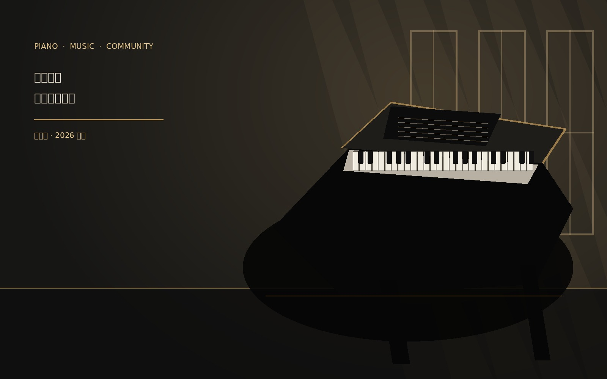

让音乐走进校园生活
钢琴社定期开展基础教学、曲目分享、自由练习和小型展示活动。我们希望为每一位喜欢钢琴的同学提供交流空间，让初学者能够轻松入门，也让有经验的成员拥有展示和分享的机会。

我们的活动
在基础教学活动中，成员可以学习键盘布局、基础乐理、节奏训练和简单曲目；在曲目分享活动中，大家轮流介绍自己喜欢的作品，交流练习心得；在学期展示活动中，成员可以自愿报名演奏，用音乐记录自己的成长。
社团欢迎不同专业、不同年级和不同基础的同学。你不需要提前准备一首完整的曲子，只要愿意了解钢琴、愿意和大家交流，就可以成为我们的一员。
← 返回钢琴社招新主页